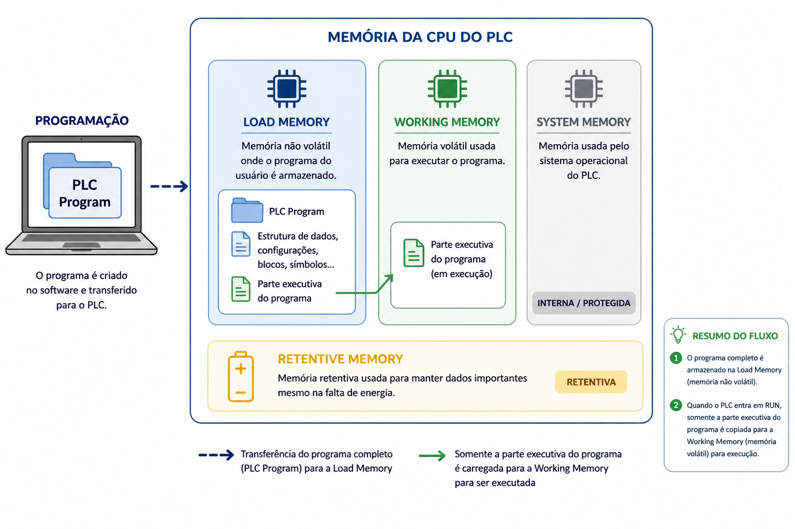

Texto Explicativo da Aula
Introdução à Memória de Trabalho
Dando continuidade ao estudo das quatro áreas de memória da CPU S7, este capítulo aborda a Memória de Trabalho (Working Memory), uma das regiões mais importantes para a execução do programa de controle. Compreender seu papel e sua relação com a Memória de Carga é fundamental para entender como a CPU do CLP processa e executa o programa desenvolvido pelo engenheiro.
O que é a Memória de Trabalho?
A Memória de Trabalho é a área da CPU responsável por armazenar e processar a parte executável do programa durante o seu funcionamento. Enquanto a Memória de Carga funciona como um repositório permanente — guardando o programa completo transferido do computador —, a Memória de Trabalho é o espaço dinâmico onde o programa efetivamente "ganha vida" e é executado pelo processador da CPU.
Em termos técnicos, nem todo o conteúdo armazenado na Memória de Carga é necessário para a execução do programa a cada ciclo de varredura. A Memória de Carga pode conter, além do código executável, comentários, símbolos, dados de configuração e outras informações auxiliares utilizadas durante o desenvolvimento e a documentação do projeto. Apenas a parte executável — os blocos de programa que a CPU precisa processar — é transferida para a Memória de Trabalho no momento em que o sistema entra em operação.

Analogia com o Funcionamento de um Computador
Para facilitar a compreensão, é útil retomar a analogia com o funcionamento de um computador convencional, já apresentada no estudo dos tipos de memória:
Em um computador, os programas instalados ficam armazenados no disco rígido (ou SSD), que funciona como memória de armazenamento permanente. Quando o usuário abre um programa para utilizá-lo, o sistema operacional transfere os dados necessários do disco rígido para a RAM (Random Access Memory), onde o processador pode acessá-los com alta velocidade para executar as operações solicitadas.
O funcionamento da memória da CPU do CLP S7 segue exatamente o mesmo princípio:
Assim como o processador do computador não acessa diretamente o disco rígido para executar um programa — ele trabalha sempre com os dados presentes na RAM —, a CPU do CLP não executa o programa diretamente da Memória de Carga. O processo ocorre em duas etapas bem definidas:
- Armazenamento: o programa completo é gravado na Memória de Carga (MMC) durante o download.
- Transferência e execução: ao iniciar a operação (modo RUN), a CPU transfere automaticamente a parte executável do programa para a Memória de Trabalho, onde ela é processada ciclicamente durante o ciclo de varredura.
Características da Memória de Trabalho
A Memória de Trabalho é implementada internamente na CPU, utilizando tecnologia RAM. Isso significa que ela compartilha da mesma característica fundamental da RAM: é uma memória volátil, ou seja, seu conteúdo é perdido quando a alimentação elétrica é interrompida.
No entanto, essa volatilidade não representa um problema prático para a integridade do programa, pois o código executável pode sempre ser recarregado a partir da Memória de Carga (MMC) — que é não volátil — toda vez que a CPU é reiniciada ou energizada. O processo de transferência da Memória de Carga para a Memória de Trabalho ocorre automaticamente durante a inicialização da CPU, sem necessidade de intervenção do operador.
É importante distinguir, porém, os dados do programa em si (código lógico) dos dados de processo (valores de variáveis, contadores, temporizadores) que também residem na Memória de Trabalho durante a execução. Esses dados de processo são perdidos a cada reinicialização, a menos que sejam configurados como remanentes — tema que será abordado no estudo da Memória Remanente.
O Fluxo Completo: Da Programação à Execução
Para consolidar a compreensão, é útil visualizar o fluxo completo que o programa percorre, desde sua criação até a execução no CLP:
- Desenvolvimento: o engenheiro cria o programa de controle no software (ex.: STEP 7 ou TIA Portal) instalado no computador.
- Download: o programa é transferido do computador para a Memória de Carga (MMC) da CPU via cabo de comunicação.
- Inicialização: ao ser colocada em modo RUN, a CPU lê a Memória de Carga e transfere a parte executável do programa para a Memória de Trabalho.
- Execução cíclica: a CPU processa o programa ciclicamente na Memória de Trabalho — lendo entradas, executando a lógica e atualizando saídas — repetindo esse ciclo continuamente enquanto estiver em modo RUN.
- Reinicialização: em caso de falta de energia ou reset, o programa é recarregado automaticamente da Memória de Carga (não volátil) para a Memória de Trabalho (volátil), restabelecendo a operação sem perda do código de controle.
Por que essa Arquitetura é Eficiente?
A separação entre Memória de Carga e Memória de Trabalho não é uma complicação desnecessária — ela representa uma escolha de projeto que equilibra segurança, velocidade e praticidade:
- Segurança: o programa completo fica protegido na Memória de Carga não volátil (MMC), garantindo que não seja perdido em caso de falta de energia.
- Velocidade: a Memória de Trabalho em RAM oferece altíssima velocidade de acesso, permitindo que a CPU execute o ciclo de varredura em milissegundos — desempenho que seria impossível se o programa fosse executado diretamente da memória Flash do MMC, cujo acesso é mais lento.
- Flexibilidade: apenas a parte necessária do programa é carregada na Memória de Trabalho, otimizando o uso dos recursos internos da CPU.
Exemplo Prático Aplicado
Cenário: Análise do Comportamento da Memória durante a Operação de um CLP em uma Estação de Tratamento de Água
Uma estação de tratamento de água utiliza um CLP Siemens S7-300 para controlar bombas, válvulas e sistemas de dosagem de produtos químicos. O exemplo a seguir demonstra como a Memória de Carga e a Memória de Trabalho interagem durante a operação real do sistema.
Passo 1 - Desenvolvimento e download do programa
O engenheiro responsável desenvolve o programa de controle no STEP 7, contendo a lógica para acionamento de bombas, controle de nível dos reservatórios e alarmes de falha. Após a validação em simulação, realiza o download para a CPU. O programa completo — incluindo comentários, configurações e código executável — é gravado no cartão MMC (Memória de Carga).
Passo 2 - Inicialização do sistema
O operador move a chave seletora da CPU para a posição RUN. A CPU inicia o processo de carregamento: lê o MMC, identifica os blocos executáveis do programa e os transfere automaticamente para a Memória de Trabalho (RAM interna). Os comentários e dados auxiliares de documentação permanecem apenas no MMC, pois não são necessários para a execução.
Passo 3 - Execução cíclica em operação normal
Com o programa na Memória de Trabalho, a CPU inicia o ciclo de varredura. A cada ciclo (executado em poucos milissegundos), a CPU lê os sinais dos sensores de nível e vazão, processa a lógica do programa na Memória de Trabalho e atualiza os comandos para as bombas e válvulas. Esse processo ocorre de forma contínua e transparente para o operador.
Passo 4 - Simulação de falta de energia
Durante a madrugada, ocorre uma interrupção no fornecimento de energia por 15 minutos. Com a CPU sem alimentação, a Memória de Trabalho (RAM) perde seu conteúdo — o programa executável e os valores instantâneos de variáveis são apagados. No entanto, o cartão MMC mantém o programa intacto, pois é uma memória não volátil.
Passo 5 - Retorno da energia e reinicialização automática
Ao retornar a energia, a CPU reinicia automaticamente. Ela acessa o MMC, recarrega o programa executável para a Memória de Trabalho e retorna ao modo RUN sem qualquer intervenção manual. O sistema de tratamento de água retoma o controle automaticamente, demonstrando a robustez da arquitetura de memória do CLP.
Conclusão prática: a separação entre Memória de Carga (não volátil) e Memória de Trabalho (volátil e rápida) garante simultaneamente a integridade do programa e a velocidade de execução necessária para o controle em tempo real do processo industrial.
Questões de Múltipla Escolha
-
Qual é a principal função da Memória de Trabalho (Working Memory) na CPU do CLP S7?
A) Armazenar permanentemente o programa completo baixado do computador para a CPU
B) Processar e executar a parte executável do programa durante o ciclo de varredura
C) Manter os dados de configuração de rede e comunicação da CPU
D) Registrar o histórico de alarmes e falhas ocorridas durante a operação do sistema
-
Qual é a relação correta entre a Memória de Carga e a Memória de Trabalho no CLP S7?
A) A Memória de Trabalho armazena o programa permanentemente; a Memória de Carga executa o programa
B) Ambas armazenam cópias idênticas do programa para garantir redundância em caso de falha
C) O programa é gravado na Memória de Carga e, ao entrar em operação, a parte executável é transferida para a Memória de Trabalho
D) A Memória de Carga é responsável pela execução; a Memória de Trabalho serve apenas como backup temporário
-
No computador convencional, qual componente corresponde funcionalmente à Memória de Trabalho do CLP S7?
A) Disco rígido (HD ou SSD), onde os programas são armazenados permanentemente
B) RAM (Random Access Memory), onde os programas são carregados para execução pelo processador
C) ROM da BIOS, que armazena as instruções de inicialização do sistema
D) Memória cache do processador, utilizada exclusivamente para instruções de sistema operacional
-
Por que a CPU do CLP não executa o programa diretamente da Memória de Carga (MMC)?
A) Porque o MMC utiliza tecnologia ROM, que não permite leitura pelo processador da CPU
B) Porque a velocidade de acesso da memória Flash do MMC é mais lenta que a da RAM da Memória de Trabalho, o que comprometeria o desempenho do ciclo de varredura
C) Porque o MMC armazena apenas dados de configuração de rede, não o código executável do programa
D) Porque o protocolo de comunicação entre o MMC e a CPU não suporta execução direta de código
-
A Memória de Trabalho do CLP S7 é baseada em qual tecnologia de memória?
A) Flash EEPROM, garantindo retenção de dados mesmo sem alimentação elétrica
B) ROM, permitindo leitura rápida mas impedindo qualquer modificação durante a execução
C) RAM, oferecendo alta velocidade de acesso com característica volátil
D) EEPROM elétrica, combinando velocidade de acesso com retenção não volátil de dados
-
O que acontece com o conteúdo da Memória de Trabalho em caso de interrupção da alimentação elétrica da CPU?
A) O conteúdo é automaticamente salvo no MMC antes do desligamento, sem perda de dados
B) O conteúdo é perdido, pois a Memória de Trabalho é baseada em RAM, que é volátil
C) O conteúdo é transferido para a Memória Remanente, onde fica preservado sem energia
D) O conteúdo permanece intacto por até 24 horas graças à bateria de backup integrada à RAM
-
Ao retornar a energia após uma falta, o que a CPU S7 faz automaticamente em relação à Memória de Trabalho?
A) Aguarda o operador realizar manualmente o download do programa via software de programação
B) Solicita confirmação do operador antes de recarregar o programa para evitar execução indesejada
C) Recarrega automaticamente a parte executável do programa da Memória de Carga (MMC) para a Memória de Trabalho
D) Entra em modo de diagnóstico e permanece em STOP até que o técnico realize uma inspeção completa
-
Por que a arquitetura que separa a Memória de Carga da Memória de Trabalho é considerada eficiente para sistemas de controle industrial?
A) Porque elimina completamente a necessidade de qualquer tipo de memória não volátil no sistema
B) Porque garante simultaneamente a integridade do programa (via memória não volátil) e a velocidade de execução (via RAM de alta velocidade)
C) Porque permite que dois programas diferentes sejam executados simultaneamente pela mesma CPU
D) Porque reduz o tempo de download do programa do computador para a CPU em até 90%
-
Qual das afirmações abaixo descreve corretamente o fluxo do programa desde sua criação até a execução no CLP S7?
A) Computador → Memória de Trabalho → Memória de Carga → Execução pela CPU
B) Computador → Memória de Carga → Memória de Trabalho → Execução pela CPU
C) Memória de Carga → Computador → Memória de Trabalho → Execução pela CPU
D) Computador → Memória do Sistema → Memória de Carga → Execução pela CPU
-
Um técnico observa que, após cada falta de energia, o CLP retoma a operação automaticamente sem necessidade de intervenção. No entanto, certos valores de contadores são sempre zerados após o retorno da energia. Qual é a explicação mais provável para esse comportamento?
A) O MMC está danificado e não consegue reter o programa completo entre as faltas de energia
B) Os valores dos contadores estão armazenados na Memória de Trabalho (RAM volátil) e são perdidos, enquanto o código do programa é recarregado do MMC automaticamente
C) A CPU está operando sem o cartão MMC, dependendo apenas da memória RAM interna para armazenar o programa
D) O modo de operação da CPU está configurado incorretamente, impedindo a retenção de dados entre ciclos de energia
Gabarito
1 - B | 2 - C | 3 - B | 4 - B | 5 - C | 6 - B | 7 - C | 8 - B | 9 - B | 10 - B